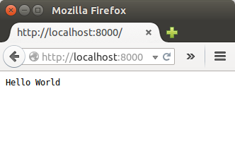

You will create your first simple node web service...
If you do not have Node.js installed in you machine, please go to nodejs.org and download/install node for your platform. To check if node is working, open a command line/terminal window on your machine and enter node -v. IT should respond as follows:
> node -v
v0.13.0-pre
The work for this lab has been tested with node version 0.13.0.
We will be using node as a web application platform. In this step we'll set up a simple HTTP server that responds to every request with the plain text message "Hello World". Create a new folder called nodeservers and create a new file called "simple-server.js" with the following contents:
// Load the http module to create an http server.
var http = require('http');
// Configure our HTTP server to respond with Hello World to all requests.
var server = http.createServer(function (request, response) {
response.writeHead(200, {"Content-Type": "text/plain"});
response.end("Hello World\n");
});
// Listen on port 8000, IP defaults to 127.0.0.1
server.listen(8000);
// Put a friendly message on the terminal
console.log("Server running at http://127.0.0.1:8000/");
In the first line, we include the http core module and assign it to a variable called http. Next we assign a variable called server from the http.createServer(...) function. The argument passed into this call is the function that is called whenever an http request comes in.
Finally we call server.listen(8000) to tell node.js the port on which we want our server to run.
To run the server open a terminal/command window in the lab6 folder and enter:
node simple-server.js
Now open your browser to 'http://localhost:8000'. You should see the following:

The connection function is invoked with a req and res object. The req object represents the HTTP request and is a readable stream that emits 'data' events for each incoming piece of data (like a form submission or file upload). The res object represents the HTTP response and is used to send data back to the client. In our case we are simply sending a 200 OK header, as well as the body 'Hello World'.
Node.js provides a simple module system that lets you structure your program into different files. In our simple-server.js example, we use the core http module to create our HTTP service. You can also write your own modules. When creating a module, this can be interpreted as moving all related functions into a file. For example, update your simple-server.js file as follows:
// Load the http module to create an http server.
var http = require('http');
// Load the greeting module to provide the greeting.
var greeting = require('./greeting');
// Configure our HTTP server to respond with Hello World to all requests.
var server = http.createServer(function (request, response) {
response.writeHead(200, {"Content-Type": "text/plain"});
response.end(greeting.english());
});
// Listen on port 8000, IP defaults to 127.0.0.1
server.listen(8000);
// Put a friendly message on the terminal
console.log("Server running at http://127.0.0.1:8001/");
Now create a new file called 'greeting.js' in the same folder with the following content:
//Greeting in English
exports.english = function(){
return "Hello World!";
}
//Greeting in French
exports.french = function(){
return "Bonjour tout le Monde!";
}
Now test your file again using a browser. The exports expose the functions to other modules that require them. To access the exported functions in out simple server, we can load the greeting module using the require function in var greeting = require('./greeting');.
As you will see, the core modules give you very few modules. Most of the real power in Node.js is contained in the third party modules available through the Node Package Management system(NPM).
Node Package Manager(NPM), is the program you use to install third party Node modules. It comes with more recent versions of Node so no need to install it.
The most common usage of npm is to install packages that have been published to the npm registry. An example is the express package. To install request, open a terminal/command promt and change directory to the lab6 folder. Enter the following command:
npm install express
This will install the package to the node_modules folder in the project folder. All locally installed modules will be installed here.
To use the package, add another "require" to the server code:
require('express')
We will be using the Express package later on to help us create web apis.
You already used NPM in a previous lab to install http-server package as follows npm install http-server -g to serve up HTML pages. The '-g' indicates that this package will be installed globally - i.e. acessible anywhere. Global instalations are typically used for command line utilities.
If you're developing a Node program or library for deployment, it's a good practice to include a package.json file. This file is a manifest of the Node project and is located at your project root. It contains various information specific to your project. To create a package.json file, run the following in the lab6 folder:
npm init
You'll now be asked a few questions about your node app. Answer as follows: - name: (node lab 1) - version: (1.0.0) ; - description: simple http server; - entry point: (greeting.js) simple-server.js; - keywords: http node - author: your name - license: (ISC)
You can leave the others blank.
We'll now add some static content to our web server. Express is a richer web app package and provides a nice high level approach to serving up static content. It's based around the idea of creating an Express "app" that you can easily configure. One of the configuration options allows you to specify the location of your publicly available content such as static HTML, CSS, client-side Javascript files etc.
+public
|-javascript
|-stylesheets
var express = require('express');
//create an express app
var app = express();
// Configure the app to serve up content from public directory
app.use(express.static(__dirname + '/public'));
// Listen on port 8000, IP defaults to 127.0.0.1
app.listen(8000)
// Put a friendly message on the terminal
console.log("Server running at http://127.0.0.1:8000/");
node server.js at the terminal/command line as before. Now test the application as before in a browser. It should work exactly as before. Express gives us an easy way of mapping specific URL paths to Javascript functions. You will now replicate the functionality from the "Hello World" section so that a HTTP GET request for the URL path '/greeting/' will respond with "Hello World". Modify the server.js by adding an app.get([route],[callback function]).
- Modify the server.js script to include a route for /greeting that responds with "hello world".
var express = require('express');
//Add greeting module
var greeting = require('./greeting');
//create an express app
var app = express();
// Configure the app to serve up content from public directory
app.use(express.static(__dirname + '/public'));
//add route for /greeting
app.get('/greeting',function (request, response) {
response.writeHead(200, {"Content-Type": "text/plain"});
response.end(greeting.english());
});
// Listen on port 8000, IP defaults to 127.0.0.1
app.listen(8000)
// Put a friendly message on the terminal
console.log("Server running at http://127.0.0.1:8000/");